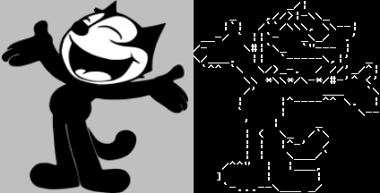

|  | This pages takes an image and attempts to create an ASCII-art derivative of it using an edge-detection algorithm. It works best for images with solid colors and hard edges.
|
Select a preset: Graphic (Hard Edges) - Photo
Output Height:
+ Advanced
Brian MacIntosh waives any copyright applied to derivative images produced by this software program. You may use images and textual output produced by this program for any purpose allowed under any copyright(s) of the input image.
THE SOFTWARE IS PROVIDED "AS IS", WITHOUT WARRANTY OF ANY KIND, EXPRESS OR IMPLIED, INCLUDING BUT NOT LIMITED TO THE WARRANTIES OF MERCHANTABILITY, FITNESS FOR A PARTICULAR PURPOSE AND NONINFRINGEMENT. IN NO EVENT SHALL THE AUTHORS OR COPYRIGHT HOLDERS BE LIABLE FOR ANY CLAIM, DAMAGES OR OTHER LIABILITY, WHETHER IN AN ACTION OF CONTRACT, TORT OR OTHERWISE, ARISING FROM, OUT OF OR IN CONNECTION WITH THE SOFTWARE OR THE USE OR OTHER DEALINGS IN THE SOFTWARE.